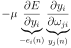
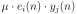
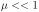
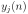

We can now derive the learning rule which changes the weights
. We simply insert Eq. 2,
3 and 4 into Eq. 5:
(7)
(8)
(9)

(10)

(11)
where  is the learning rate or the “step change”. The
learning rule Eq. 11 is simply a multiplication of the
input activity  with the error (Widrow and Hoff, 1960).
 . We simply insert Eq. 2,
3 and 4 into Eq. 5:
. We simply insert Eq. 2,
3 and 4 into Eq. 5:
 (Widrow and Hoff, 1960).
(Widrow and Hoff, 1960).